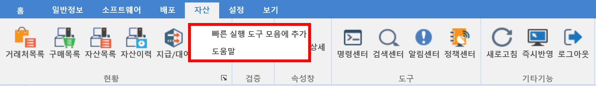
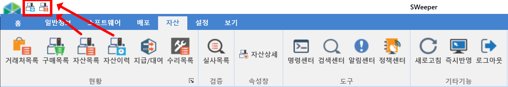

10-6-1. 빠른 실행 도구 모음에 추가
10-6-1. 빠른 실행 도구 모음에 추가
Source: https://www.sweeper.or.kr/etc/manual/10-6-1.html
10-6-1. 빠른 실행 도구 모음에 추가
10. 기타 ›› 10-6. 메뉴 우클릭 ››


-
메뉴 우클릭을 통해 빠른 실행 도구 모음에 해당 메뉴를 추가할 수 있습니다.
-
메뉴 목록에서 찾는 수고 없이 해당 메뉴로 쉽게 이동이 가능합니다.


© Copyright SWeeper Inc.. All Rights Reserved